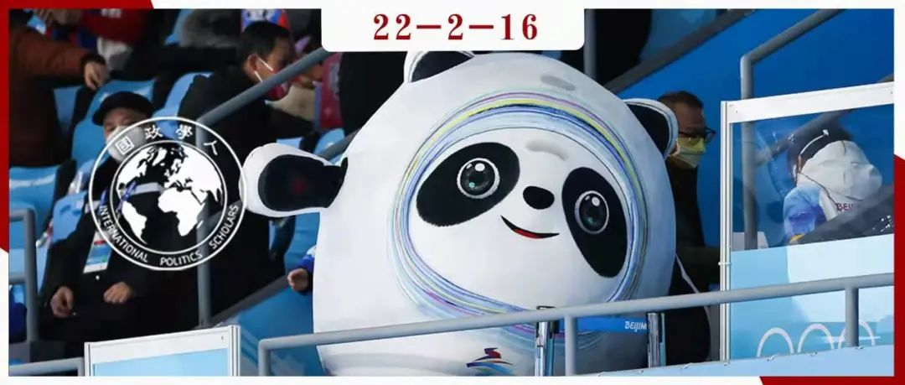

收录于合集

作品简介 ****
作者： Heather L. Dichter，英国德蒙福特大学体育历史与文化国际中心副教授，研究领域为体育史与外交。
编译： 吕紫烟（国政学人编译员，山东大学东北亚学院）
来源： Heather L. Dichter (2021) The Diplomatic Turn: The New Relationship between Sport and Politics, The International Journal of the History of Sport , 38:2-3, 247-263.

导读
北京冬奥会刚刚结束，你是否从紧张的国际体育赛事中嗅到了政治与外交的气息？虽然国际奥委会（IOC）等国际体育组织一直以来都坚称：“体育与政治无关”，但从国家申办、组织国际体育赛事，到选拔并派遣优秀运动员去国外参赛，这一系列举动无不透漏着：国家希望通过体育活动为自己争取外交利益的意图。甚至从1896年雅典首届奥林匹克运动会开始，体育赛事中便有了政治的身影。
本文认为，关于体育与政治关系的研究已经不再仅限于体育与国内政治以及国际政治对体育的影响这两类。随着档案的解密，第三类分支——体育与外交关系的研究应运而生。一方面，政府尤其是外交人员支持体育运动；另一方面，国家也利用体育活动为自己争取外交利益。
本文的特色在于以解密档案为基础的案例研究，增强了结论的说服力。本文还提出了该领域的一系列新兴研究议题，如体育促进发展、体育科技等，并指出，未来的研究对象国范围有待扩大，但对体育外交活动的界定则须更加严谨。
摘要
随着越来越多的外交档案被解密，学者们不仅发现了越来越多的政府，尤其是外交官参与体育事务的实例，还发现了历史上体育与政治相互交织联系的各种不同方式。因此，过去二十年见证了 体育史上的外交转向（diplomatic turn in sport history） 。该类型的研究已经成为体育和政治研究的一个新的分支，这一分支包括 体育的外交效用（the diplomatic use of sport）、体育活动外交（through sport diplomacy）以及体育组织外交（sport-as-diplomacy） 。体育代表和政府外交官通过相互协调分享宝贵信息，从而使体育服务于外交目标，并使外交人员支持体育运动。虽然传统观点认为政府人员和体育组织之间的关系属于国家的体育政治，但其影响范围远远超出了国内。将体育组织及其代表的档案与外交部和政府档案相结合，不仅能让我们对冷战时期的国际体育和外交产生新的理解，也为了解实践者如何相互接触和影响提供了新的视角。
编译
一个多世纪以来，国际体育界一直声称“体育是与政治分开的”，尤其是当他们不愿采取特定行动方针或不愿就当前的政治状况发表评论时。然而，研究体育的历史学家们都知道， 把体育和政治分开是完全错误的 。关于政治和体育结合的研究通常聚焦于调查政府何时干预体育事务。例如，美国为了在奥运会上更好地同苏联竞争，根据《业余体育法》（Amateur Sports Act）于1978年重组了整个国家体育管理结构。再如，希尔斯堡体育场灾难后英国的官方调查和立法变更，以及1988年汉城奥运会上短跑运动员本·约翰逊（Ben Johnso）兴奋剂检测呈阳性后，加拿大杜宾委员会的行动等。
国际奥委会（IOC）和国际体育联合会总是标榜自己超脱于政治。于2019年6月生效的新奥林匹克宪章中， 政治中立（political neutrality） 的概念共出现了8次。这一规定允许国际奥委会处罚违反政治中立的个人或组织。因此，近年来，当国际奥委会认定一国政府违反了体育与政治分离的原则时，就会暂停该国奥委会的工作，如加纳政府在2011年任命国家体育管理机构主席时涉嫌政治干预，科威特在2015年涉嫌“不当政府干预”。国际足联（Federation Internationale de Football Association , FIFA）也暂停了在科威特的活动，因为该国政府通过了一项新的体育法，而国际体育组织认为该法威胁到该国体育机构的自主权，违反了奥林匹克宪章和国际足联的规定。
然而，即使是1896年在雅典举办的首届现代奥运会，也有政治的身影。当时政府和皇室家族为了宣传新希腊国，为奥运会提供了金钱等形式的支持。一战后，国际奥委会禁止“战争侵略者”德国、奥地利和匈牙利的继承国参加1920年奥运会，而这显然是该组织的一种政治行为。二战后，为避免违反奥林匹克宪章，国际奥委会转而使用法律理由，即由于被外国势力占领，德国和日本都不是主权国家，因此不能立即恢复其成员国资格或准许其参加1948年奥运会。在种族隔离的几十年里，国际奥委会一直允许南非参加奥运会，直到在非洲等国家的广泛反对之下，国际奥委会才做出了让步。
当然，这些案例对体育学者来说并不新鲜。 它们大致分为两类：（1）国内政治和（2）影响奥运会（或类似国际体育赛事）的国际政治。 直到21世纪初，这两类研究一直是体育和政治关系研究的主流。第一类研究的资料几乎完全来自政府或体育的国内资料，第二类研究的资料则几乎完全来自体育组织。
过去的二十年见证了体育史上的“外交转向”。彼得•贝克（Peter Beck）在1999年出版的专著《为英国打分》(Scoring for Britain)是最早研究这一问题的文献之一，该著作考察了英国外交部对国际足球比赛的兴趣及外交利用。许多学者追随贝克脚步，为体育和政治研究开拓出第三个分支： 体育的外交效用（the diplomatic use of sport） 。这类研究大多认为，派遣运动员或体育队伍到国外是一种文化或公共外交形式。也有一些研究考察了国家举办大型活动背后的政治基础和目标。
这类研究出现时间较晚并不奇怪，因为外交文件在进入国家档案馆之前，往往有一段较长的保密期。与国家间数百年的外交关系相比，现代体育的发展不过150年，而各国派遣代表队的国际比赛要更为年轻。由于国际体育领导人一再坚持体育与政治分离，而且只有少数政府在体育运动中公开发挥积极作用，因此学者们对此缺乏深入研究是情有可原的。现在，随着越来越多的外交档案被解密，学者们发现，不仅有越来越多的政府，尤其是外交官参与体育事务的实例，而且体育与政治在历史上也以不同的方式交织在一起。
体育史上的外交转向极大地丰富了该研究领域。虽然这类研究可以被视为政治和体育研究的第三分支，但外交转向也代表了一种特定类型的研究。 国家档案在这项研究中发挥了核心作用 ，而来自与国家合作的非政府组织和个人的材料经常被用来作为官方政府文件的补充。国家既开展体育外交（Sport diplomacy），也开展体育组织外交（Sport-as- diplomacy）。体育外交是政府利用体育作为公共外交的一种手段，包括团队、运动员、旅游和活动。而体育组织外交是指体育组织，尤其是国家管理机构和国际联合会，“通过持续的国际接触和竞争，与国家、商业和工业进行互动”。体育外交转向表明，不论国家大小、体育能力强弱，各国几十年来都在开展体育外交和体育组织外交。
**
**
外交转向中的未来研究
体育史上的外交转向已经出现并将持续，这将使人们更深入地了解体育在外交中的作用。体育外交的结构可以根据行为主体和体育的性质来区分。许多行为体都可以开展体育外交行动，包括国家（及其官方外交代表）、非国家组织（包括但不限于国家和国际体育管理机构）和非国家/非机构行为体。 本研究聚焦两大类体育活动：国际体育赛事和体育交流。国际体育赛事 包括世界上最大的、学者们研究最多的奥运会和国际足联世界杯，以及其他大型赛事和小型国际比赛。申办、组织及派遣运动员参加这些赛事的过程都是这项研究需要考虑的因素。 体育交流 包括派遣国家或私人组织的优秀运动员或团队出国，交换运动员及教练。体育交流甚至可以为相关国家带来公共外交利益。需要指出的是， 这些公共外交利益也可能是其他体育关系或活动间接或意外导致的结果，因而 需要更明确地界定体育外交的范畴。
在外交转向期间的学术研究主要集中在国家的意图与行动上。外交史上较新的课题已经成为体育史学家研究的领域。体育史上外交转向的 新兴领域包括体育促进发展、体育科技等 ，同时研究的对象国范围也从大国扩展到包括非西方国家、发展中国家和体育交流的目标国家。
体育促进发展领域 日益成为众多领域学者关注的焦点，特别是体育管理和社会学。随着从事体育促进发展与和平（Sport for Development and Peace，SDP）项目的私营组织和政府机构的增多，进一步探索该领域体育与政治之间的关系，特别是这些方案如何在官方外交努力中发挥作用的时机已经成熟。一些学者已经开展早期研究。但有关正式计划的大部分外交档案还有一段保密期，目前的案例研究并不全面。随着材料的解密和口述历史的开展，学者们将解决更多问题，如这些以国家为基础的项目是如何正式化的；它们是如何被纳入政府更广泛的外交重点的；以及各种国家管理机构和专业团队是如何与这些政府项目密切合作的。
另一个有待进一步研究的领域是技术。兴奋剂和性别测试 科学是学者们持续探讨的话题，特别是当国家批准的兴奋剂干扰国际体育运动时。然而，科学技术的其他因素仍有待检验。例如，20世纪60年代卫星技术的发展使得在全球范围内转播国际体育赛事成为可能，随后，外交官们开始参与转播谈判。为了使1964年夏季奥运会能够通过卫星从日本转播到美国和欧洲，美国国务院及其驻东京外交官、日本和国际电视公司以及新成立的通信卫星公司（Communications Satellite Corporation，COMSAT）在技术、财务等方面做了很多工作。但政府和外交官在促成国际转播方面所发挥的作用尚未得到充分研究。
虽然这绝不是详尽的清单，但这些例子展示了看待政治和体育之间关系的各种方式。各国政府试图通过与本国在国际机构中的代表密切联系来影响国际奥委会和其他国际联合会的行动。
体育史上的外交转向仍有许多方面有待考察。这类研究大部分来自少数几个国家，主要是美国和西欧。其中一些研究涉及一个强国与另一个国家，还有待应用到全球其他国家的体育历史研究中。例如，主办过四届奥运会的日本、多次举办国际足联世界杯和泛美运动会的几个南美国家、非洲国家在体育方面为反对种族隔离而做出的努力、以及许多体育外交和社会发展计划的对象国家等。这只是少数几种可能性，当然还有更多的例子，学者们甚至还没有纳入考虑，因为档案材料尚未被挖掘。
当然，学者们在研究外交转向时务必谨慎，因为所有类型的国际运动都不会自动被视为外交历史。虽然外交史领域已经囊括了非国家行为体，这自然包括国家管理机构和国际联合会的行为， 但不同国家公民之间建立体育关系的简单行为或一项运动的跨国传播本身并不构成体育外交 。虽然一些国际体育赛事和个人比赛可以被视为体育外交，但并非所有的体育比赛均可如此。同样，反种族隔离或反奥林匹克网络等大众运动主要是寻求社会变革的群众运动，因此它们在很大程度上仍属于体育和政治范畴，而不是外交范畴。
语言有时会给这类研究带来挑战，尤其是在研究更广泛的跨国话题时。然而，国际学术会议允许来自世界各地的学者聚在一起，打破这些障碍，并鼓励这类研究。来自多个国家的学者们可以共同努力，为一个项目从各国获取必要的档案研究资料。
词汇整理
政治中立 political neutrality ****
国际足联
Federation Internationale Football Association (FIFA)
国际奥委会
the International Olympic Committee (IOC)
通信卫星公司
Communications Satellite Corporation (COMSAT)
审校 | 王星澳 杨沛鑫
排版 | 陆霜滢 臧泽华
文章观点不代表本平台观点，本平台评译分享的文章均出于专业学习之用, 不以任何盈利为目的，内容主要呈现对原文的介绍，原文内容请通过各高校购买的数据库自行下载。

国政学人
支持学术公益与知识传播
微信扫一扫赞赏作者 __赞赏
已喜欢，对作者说句悄悄话
取消 __
发送给作者
发送
最多40字，当前共字
上一页 1/3 下一页
长按二维码向我转账
支持学术公益与知识传播
受苹果公司新规定影响，微信 iOS 版的赞赏功能被关闭，可通过二维码转账支持公众号。